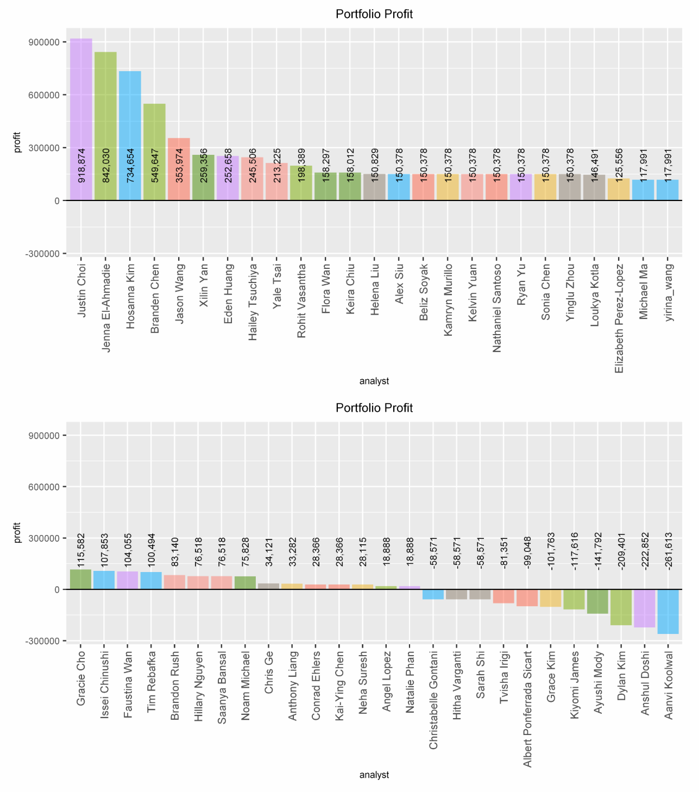
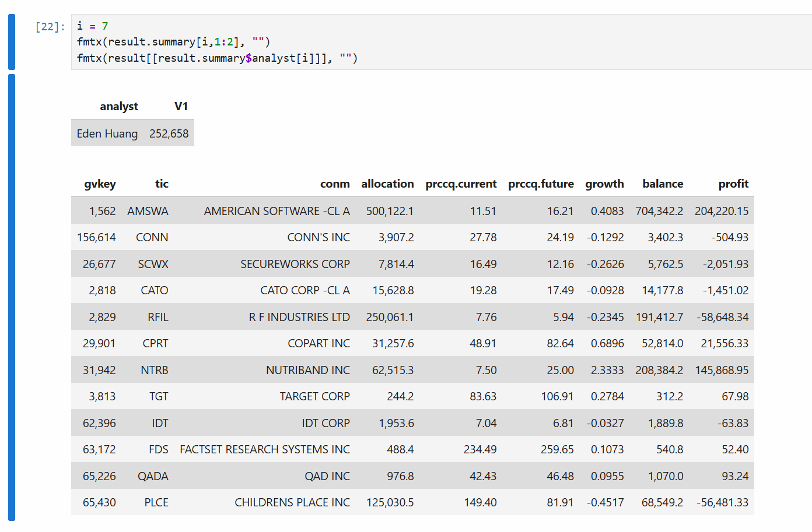

Overview
The problem
Given quarterly financial fundamentals for thousands of U.S. public companies, predict which stocks would deliver the highest 12-month returns, then allocate a fixed $1,000,000 budget across a 12-stock portfolio to maximize profit. Success was measured directly in dollars earned in a class-wide investment competition, so the modeling target was business outcome, not statistical fit alone.
Data: ~thousands of U.S. public companies from Wharton Research Data Services (Compustat / S&P Capital IQ). 2017 quarterly fundamentals (Q1–Q4, 600+ variables) used to predict Q4-2018 price growth. Target: growth = (future − current) / current, plus a big_growth flag for growth ≥ 30%.
Approach
From 600 raw variables to 3 predictors
Each company was consolidated into a single observation spanning all four 2017 quarters and joined to its 2018 price outcome. Sparse fields were dropped, missing values imputed, and the remaining correlated fundamentals compressed with principal component analysis into three orthogonal components. Every transformation (filter, imputation values, PCA weights) was serialized so it could be reapplied identically to unseen investment data at deployment.
# Keep variables that are ≥95% populated, then impute the rest
data.filter = select_if(data[, prevars], ~mean(is.na(.)) < 0.05)
data.impute = impute(data.filter)
# Compress 600+ correlated fundamentals into orthogonal components
data.pca = select_if(data.impute, function(x) is.numeric(x) & var(x) != 0)
pc = prcomp(data.pca, scale=TRUE)
data.pc = as.data.frame(pc$x)
prevars = c("PC1", "PC2", "PC3") # three core predictorsSnippets are illustrative extracts of the methodology; the full graded solution is intentionally not published.
Modeling
Profit-driven model tournament
Models were judged by a business metric rather than accuracy: the profit a portfolio of their top-12 picks would have realized.
profit = Σ (1 + growth i) × allocation i − budgetThree model families were built, 5-fold cross-validated, and tuned over predictor combinations, probability cutoffs, cluster counts, and allocation schemes.
| Model | Method | Tuning | Best CV profit |
|---|---|---|---|
| Classification | Naive Bayes on big_growth | predictor combos + cutoff (0.25–0.50) | +$47,492 |
| Regression | Linear regression on growth | predictor combinations | −$51,470 |
| Ensemble (final) | kNN + k-means clustering | allocation, cluster count, k, group features | +$1,799,015 |
The winning idea: conviction-weighted allocation
Beyond picking the right stocks, how much to bet on each mattered enormously. An exponentially weighted scheme concentrated ~50% of capital in the single highest-conviction pick and halved the allocation at each subsequent rank, amplifying returns from the strongest signals.
# Equal weight
a = c(1,1,1,1,1,1,1,1,1,1,1,1)
# Linear taper
a = c(12,11,10,9,8,7,6,5,4,3,2,1)
# Exponential (winner): ~50% in the top pick, halving each rank
a = c(2048,1024,512,256,128,64,32,16,8,4,2,1)
allocation = a * (budget / sum(a))Results
Top 15% of the class
Applied to the unseen investment-opportunities set, the pipeline ranked candidates and produced a 12-stock portfolio that returned 25.3%, or $252,658 of profit on the $1M budget, finishing 7th of ~50 analysts. Nutriband (+233%) and American Software (+41%) were the standout picks, and the conviction weighting amplified their impact.


Final 12-stock portfolio
| Ticker | Company | Allocation | Weight |
|---|---|---|---|
| AMSWA | American Software | $500,122 | 50.0% |
| RFIL | R F Industries | $250,061 | 25.0% |
| PLCE | Children's Place | $125,031 | 12.5% |
| NTRB | Nutriband | $62,515 | 6.25% |
| CPRT | Copart | $31,258 | 3.13% |
| CATO | Cato Corp | $15,629 | 1.56% |
| SCWX | Secureworks | $7,814 | 0.78% |
| CONN | Conn's Inc | $3,907 | 0.39% |
| IDT | IDT Corp | $1,954 | 0.20% |
| QADA | QAD Inc | $977 | 0.10% |
| FDS | FactSet Research | $488 | 0.05% |
| TGT | Target Corp | $244 | 0.02% |
Takeaways
What I learned
The biggest lever wasn't a fancier model; it was aligning the objective with the real goal. Optimizing directly for profit rather than classification accuracy surfaced a clustering-based ensemble and an exponential allocation strategy that a purely accuracy-driven process would have missed. Serializing the transformation pipeline was also essential: it guaranteed that raw fundamentals at deployment were processed exactly as in training, avoiding subtle leakage and drift.